Wealthfront
Bringing approachability and warmth to finance
When you think “financial institution,” what first comes to mind may be stuffy investment banks & the complicated task of managing your finances.
The Wealthfront design team reached out to me to build their foundational illustration brand system with the exact opposite in mind: creating a voice that is lively, accessible, and human, yet still dependable and professional. So, how can we take a traditionally complex, often cold and boring subject like finance and give it warmth and a human touch?
I worked with the team to develop their initial illustration style and create 60+ illustrations for the product, building a system that serves as the first chapter of their illustration brand. Here's a look at the process.
Starting blocks
Starting out, the main challenge was in developing a style that could hold the seriousness and trustworthiness of a financial product, but still had room to be warm and friendly — and could convey complicated concepts simply, without relying on obvious symbols (eg. piggybanks, bags of cash).
I explored three distinct directions that interpreted these initial values, all centered around expressing complex financial topics cleverly with an editorial bent. In particular, the team really gravitated towards a mid-century modern inspired approach (center, below), as it was grounded in solid, firm shapes that could tie in a sense of playfulness with exagerrated hand gestures and the occasional quirky flair!
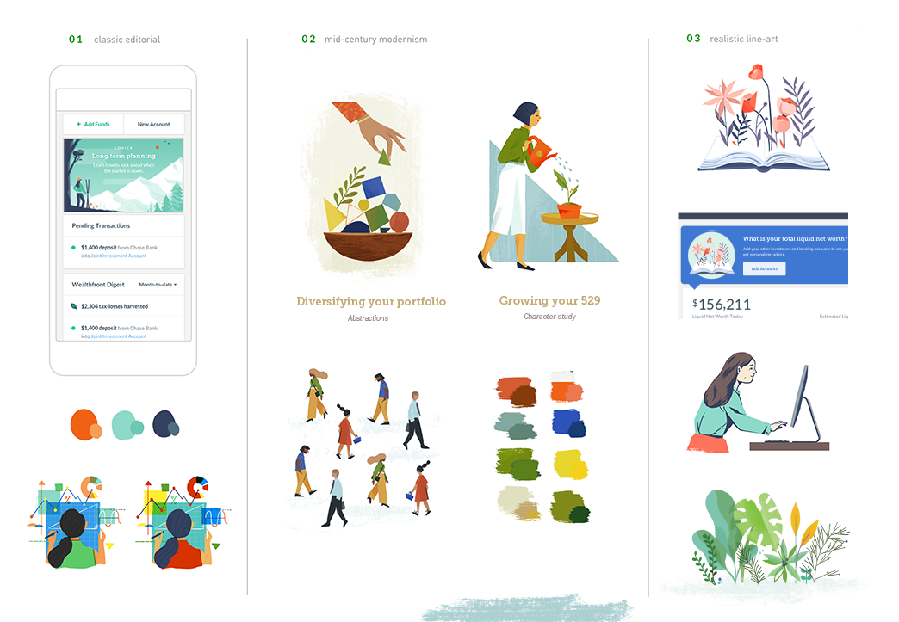Starting out: marks to paper, exploring three disjoint directions
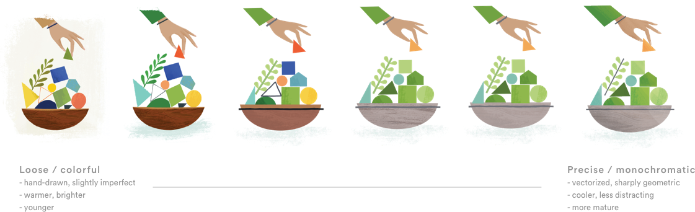Progression to final: "We like this approach, but can we inject a tad more seriousness & cohesiveness with the UI?"
With this as a starting point, I further finessed the style, focusing on simplifying color, execution (vector vs. hand-drawn, geometric vs. slightly imperfect), and tone (texture, shading) to create an overall more readable and mature aesthetic.
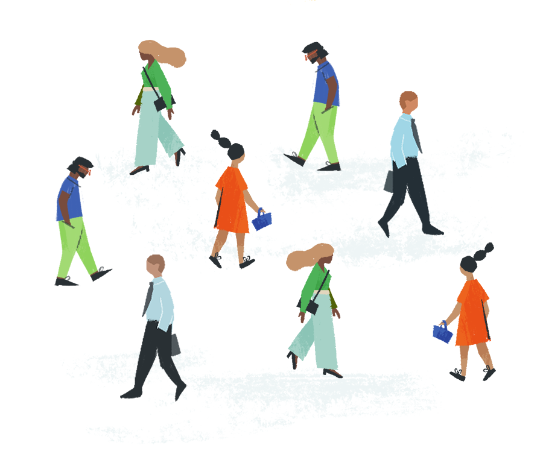Characters
Illustrations depicting very technical concepts can tend to look cold and even stock when without some form of life present (eg. people, animals, even plants) — so incorporating a character-driven approach was important in projecting warmth and relatability. Using the above explorations as a starting block, I refined the characters' design to be less "blocky" and more fluid, within a more modern and bright palette.
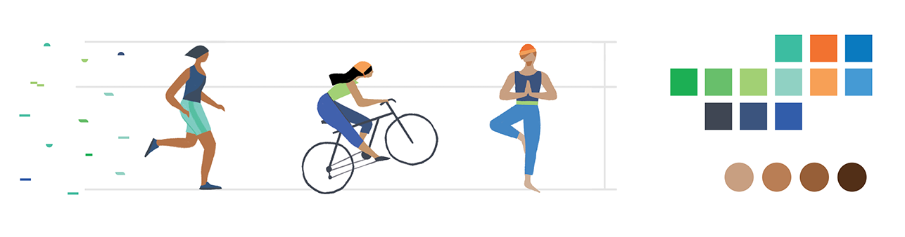Character explorations: longer legs, always in motion
In character design, a lot can be expressed through simple details. For instance, all of these Wealthfront characters have high-waisted torsos (longer legs) and their feet are always standing on a plane (never flat), so they are always in motion — which builds a sense of constant forward movement and energy.
Details like this were documented as part of an illustration style guide for the team to take and apply to future illustrations of their own.
Characters were also intentionally abstracted, using the minimal number of geometric, angular shapes needed to express movement and personality! I intentionally chose to limit the number of details (ie. facial features, hands, etc) to keep the focus on the characters' movement.
Because this abstracted stylization, characters can also interact with simplified shapes borrowed from the UI to demonstrate complex financial topics.
Metaphors & voice
When it came to extending this voice to an illustration library, the team didn't want to fall back on literal, overused imagery to convey these financial concepts.
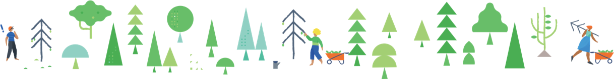So, we created a series of metaphors to represent each central concept — for instance, plants represent money, and a series of growing plants represents an increase in a consumer's investment accounts. Plants can be watered, grown, and collected — just as investment accounts can be grown and managed.
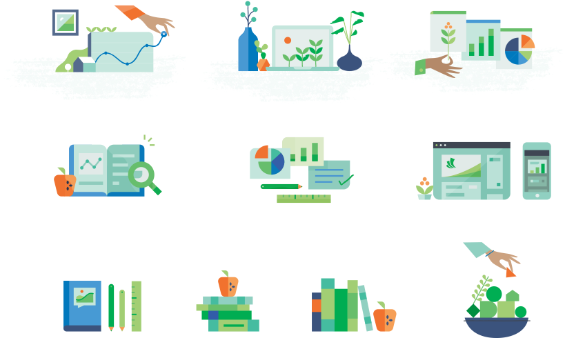I also sought to use a very human and warm tone to expressing these concepts, and realized that without characters, some of these visuals came off looking too cold or stock — as such, the overall library is very character-driven.
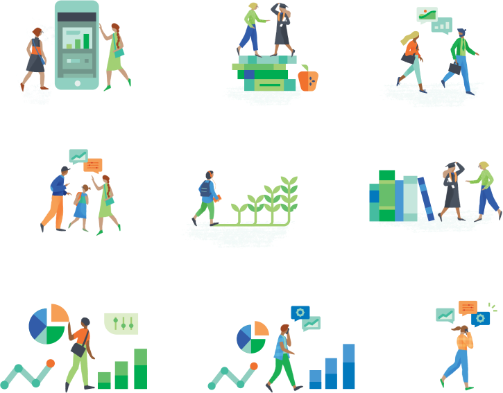With this foundation, the visual language covers concepts ranging from investing 101, managing and growing your accounts, to the automatic tax-saving benefits that Wealthfront offers.
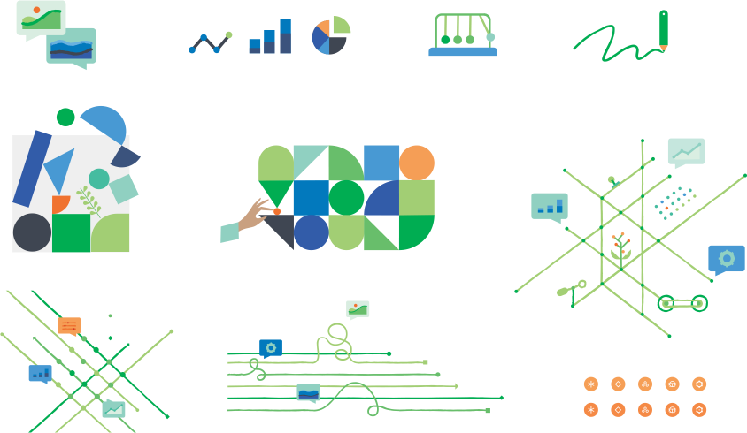 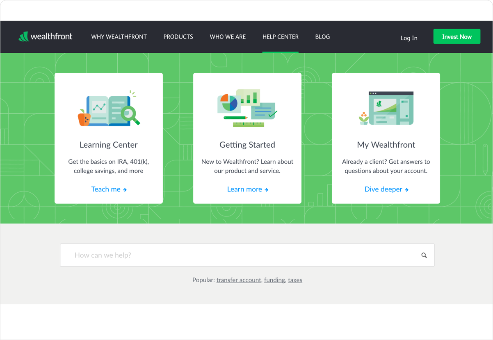To humanize the complicated automized technical back-end behind Wealthfront's services, we created a series of fun Rube-Goldberg inspired metaphors behind some of these automated investing concepts. The idea was that you could set up your investing accounts in Wealthfront and let the automated service do most of the work for you, like a behind-the-scenes machine taking care of your plants.
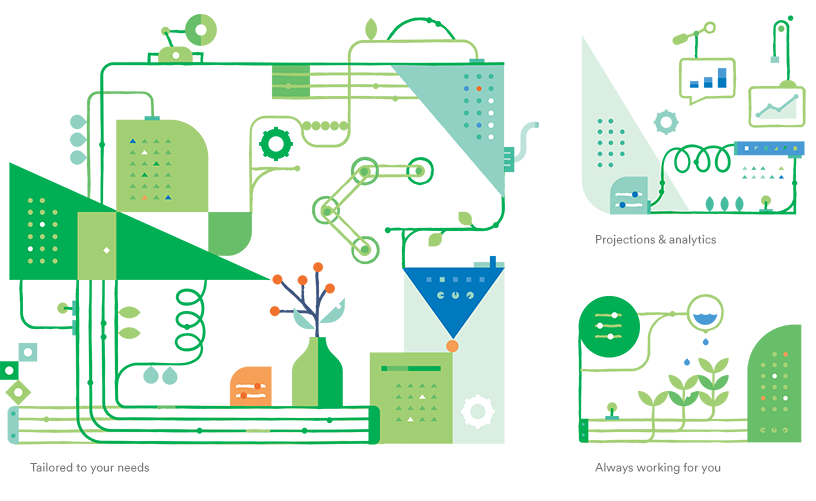 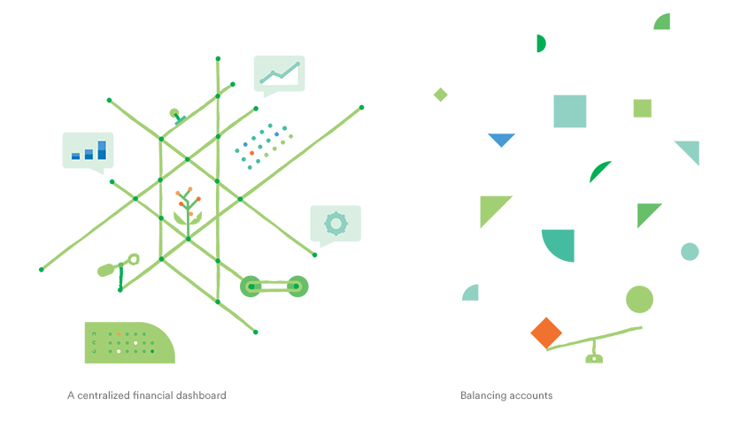Extending the system
With these pieces, the illustration brand could be extended into a full system: a set of metaphorically consistent icons, grids and backgrounds for print collateral, and illustrations to launch within the product.
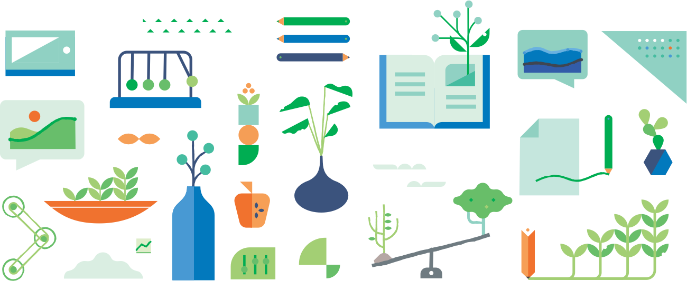Applying & growing the system
After my involvement in setting the foundation for the brand, the team did an amazing job extending out and growing the system. The below assets were created afterwards by the Wealthfront design team, and are a great example of how a flexible illustration system can be extended and developed in-house.
I really love how this system came together; I think it's really important to make concepts like finance accessible and nonintimidating to all, and one way to do that is by presenting it with friendliness and warmth. There is so much personality that these metaphors — blooming plants, humming machines, playful characters — add to this financial message, and this system set the foundation for future iterations for the illustration brand. I'm excited to see the identity grow and mature even more in future iterations and chapters!
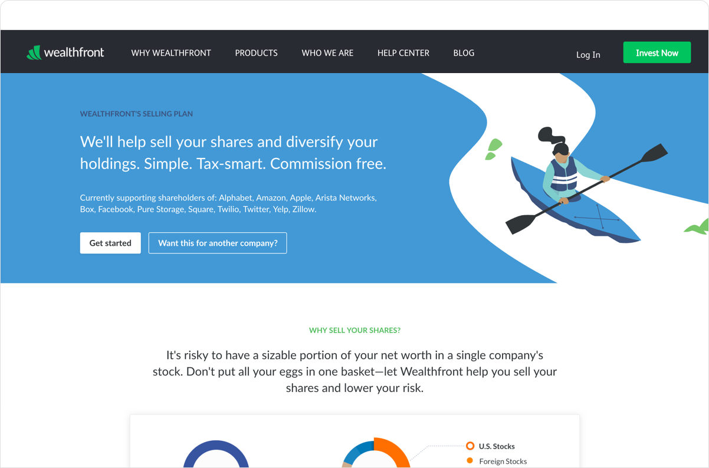